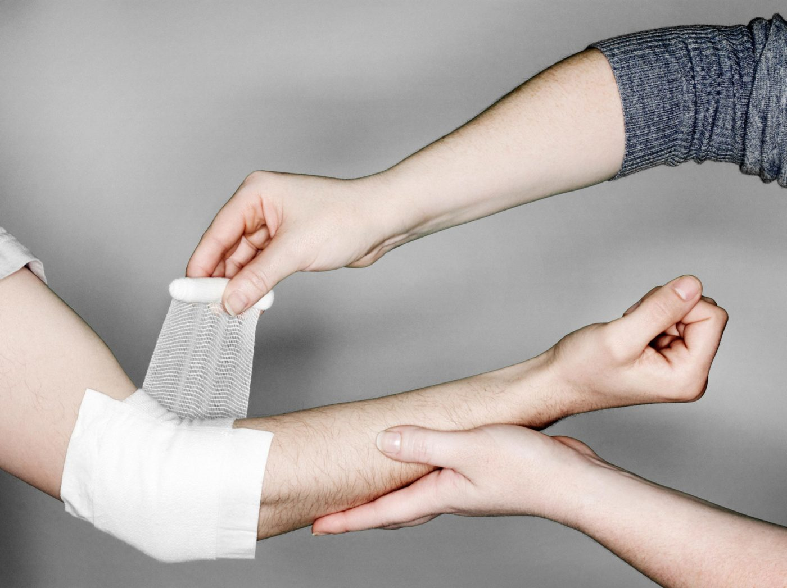
1. В чем заключается первая помощь при кровотечении?
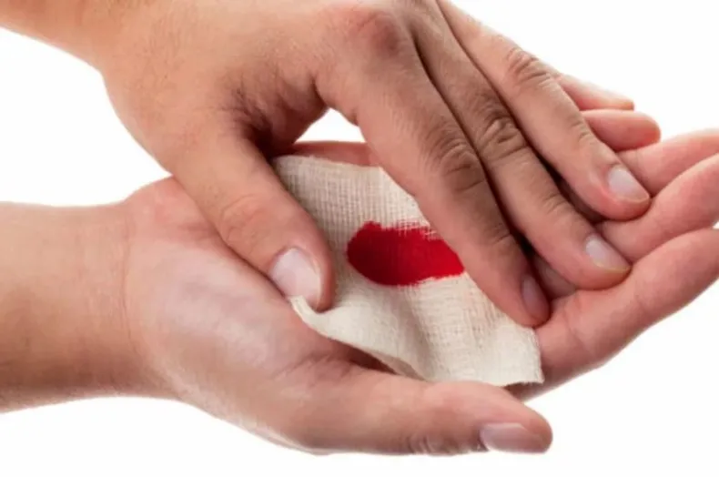
2. При небольших кровотечения необходимо прежде всего…
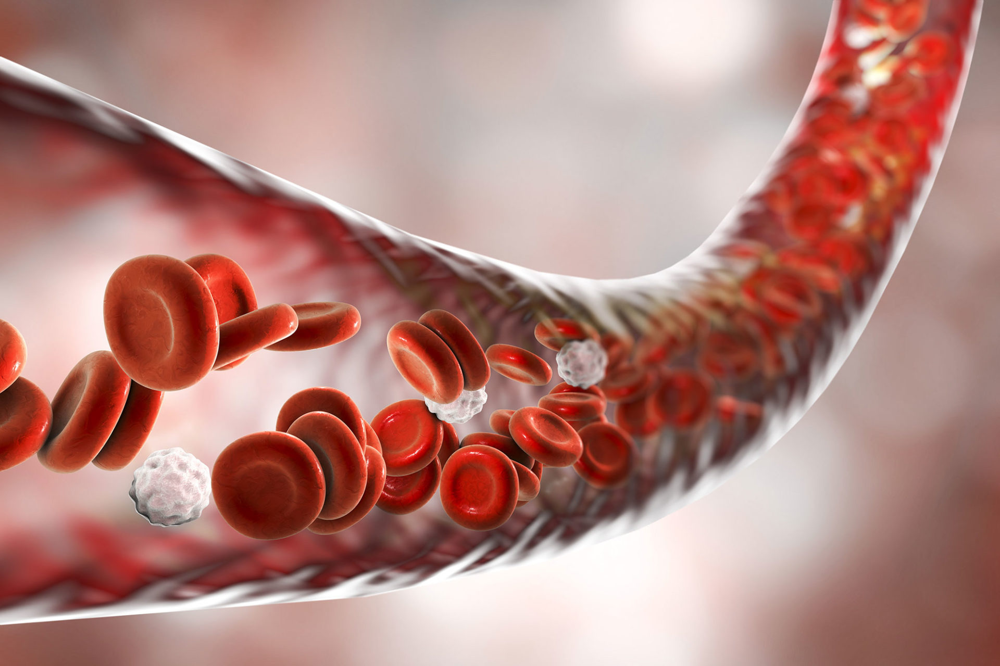
3. Какой материал лучше подойдет для перевязки места ранения?
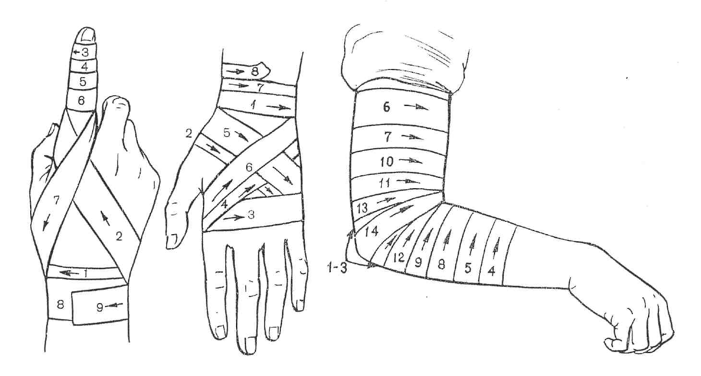
4. Как необходимо забинтовать участок повреждения?
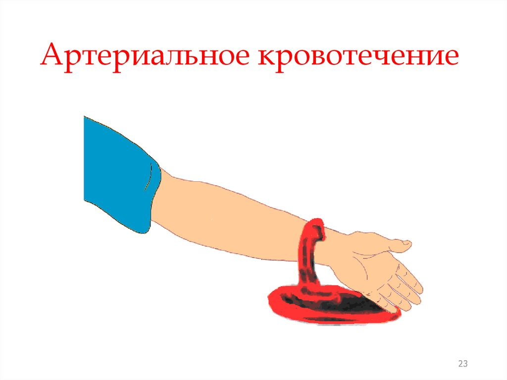
5. Как останавливается сильное артериальное кровотечение?
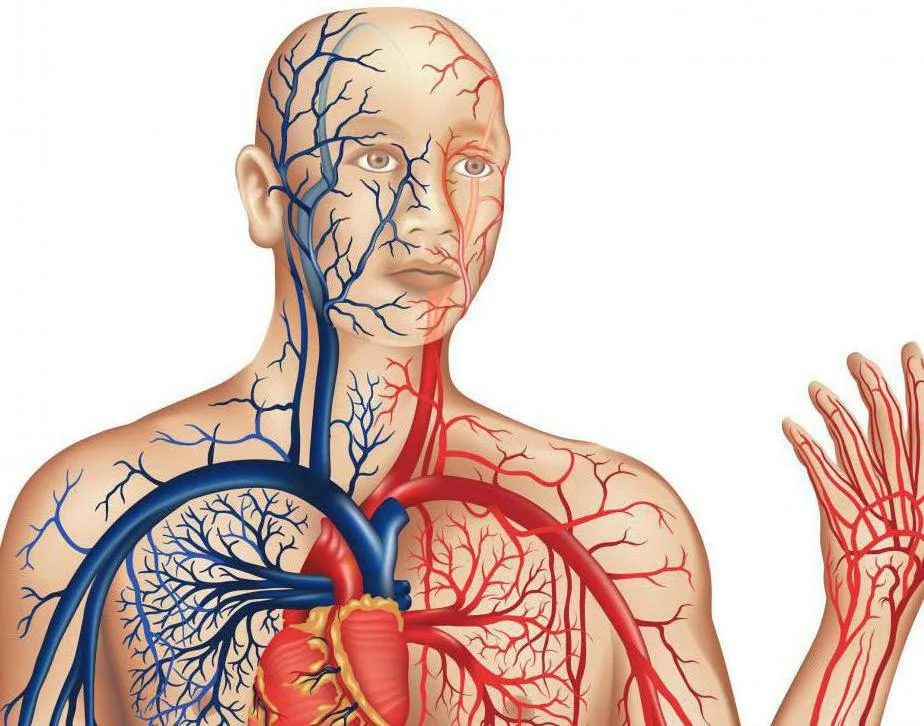
6. Что из перечисленного подойдет для остановки артериального кровотечения?
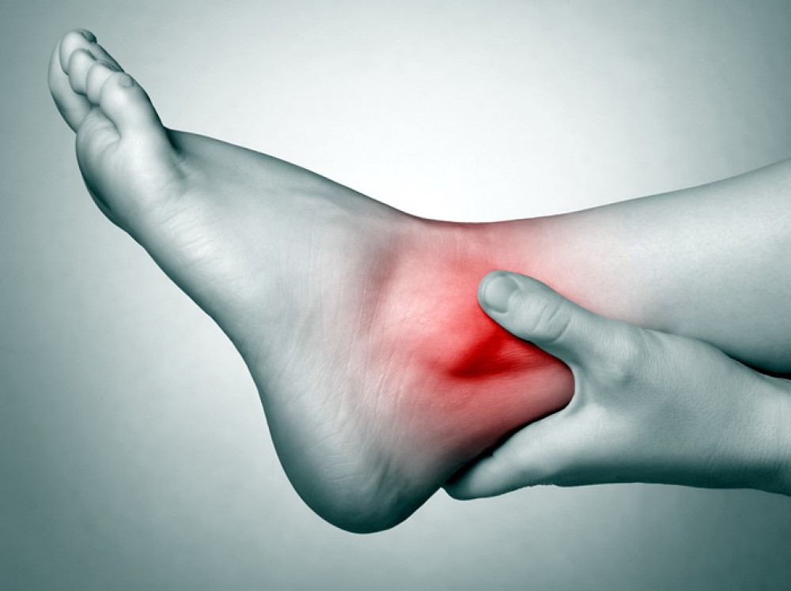
7. При ушибе необходимо…
8. Что первее всего необходимо сделать при переломе?
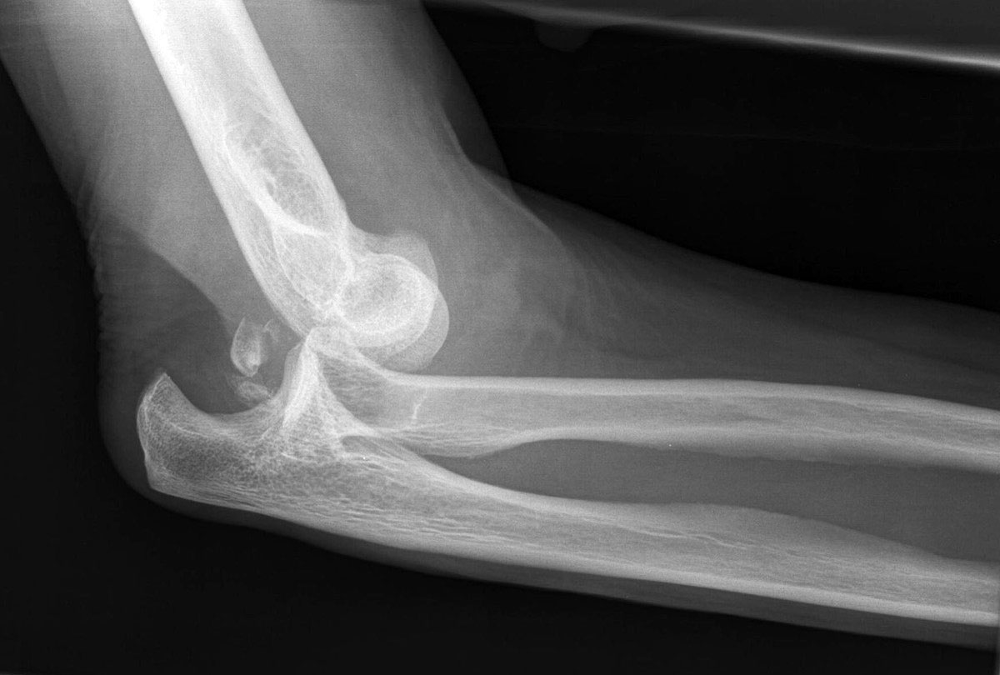
9. При вывихах, подвывихах, растяжениях связок не следует…
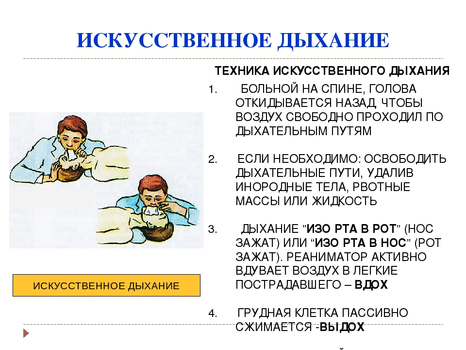
10. При вывихах, подвывихах, растяжениях связок следует…
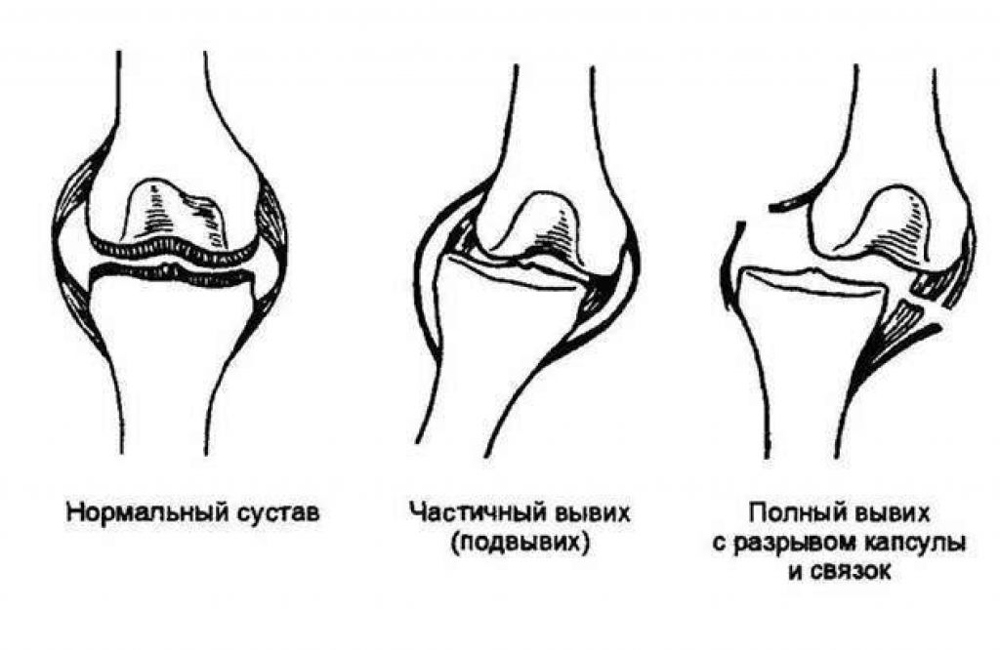
11. Искусственное дыхание производится…
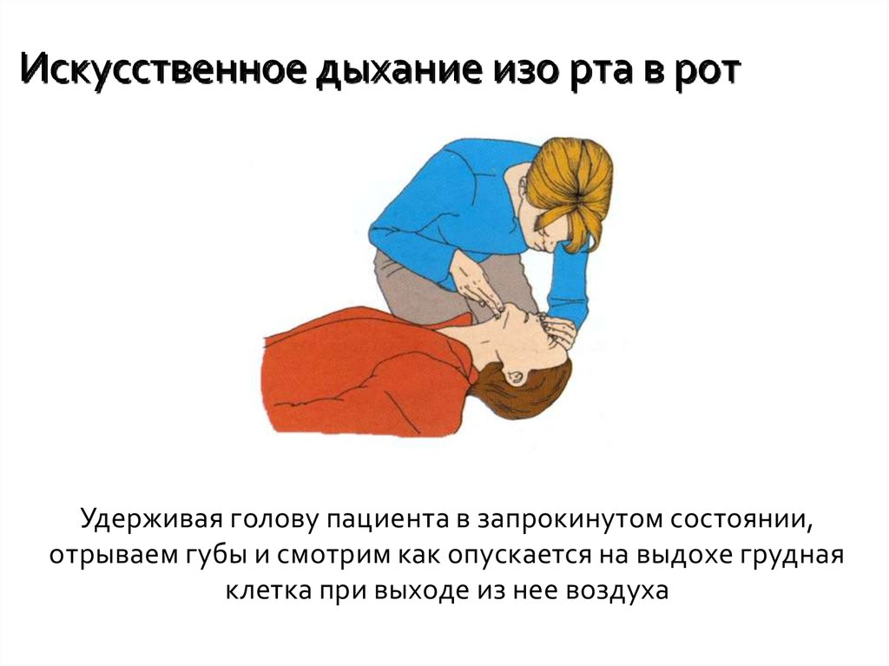
12. В каком ритме необходимо осуществлять искусственное дыхание?
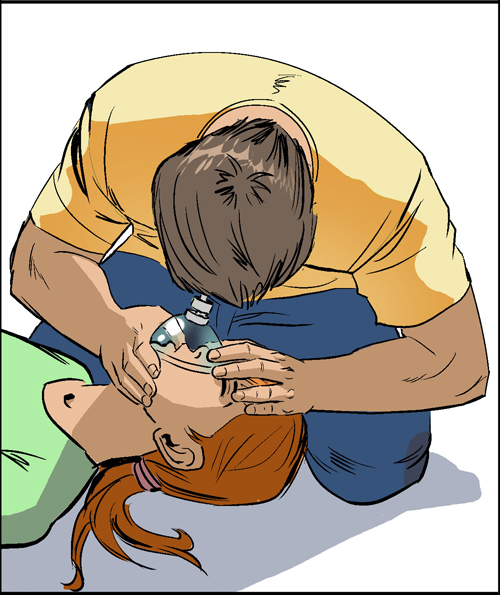
13. Перед проведением искусственного дыхания, необходимо…
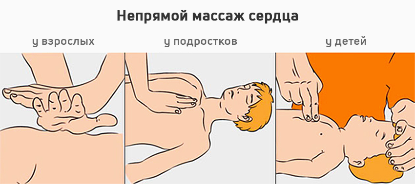
14. В каком ритме необходимо осуществлять непрямой массаж сердца?
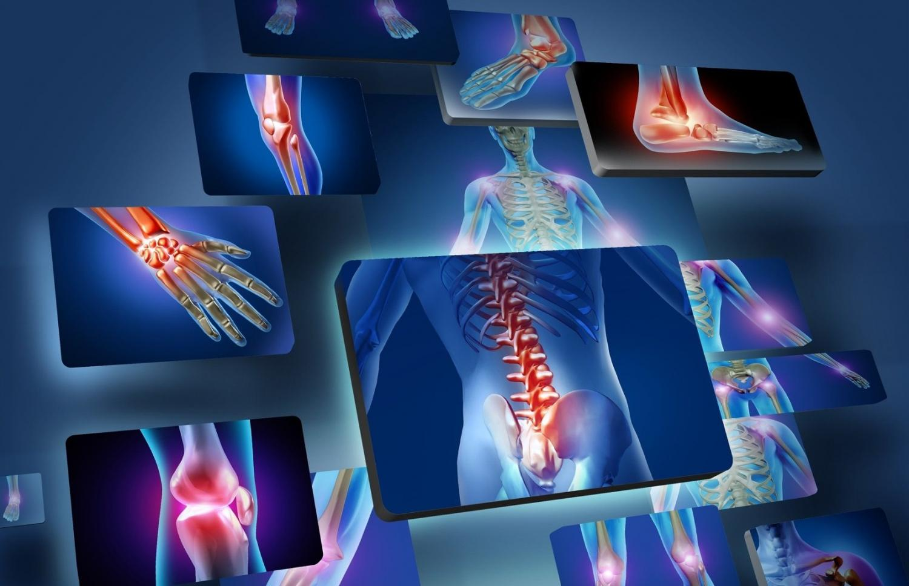
15. Что из перечисленного может сократить риск травм и растяжек при выполнении физических упражнений?